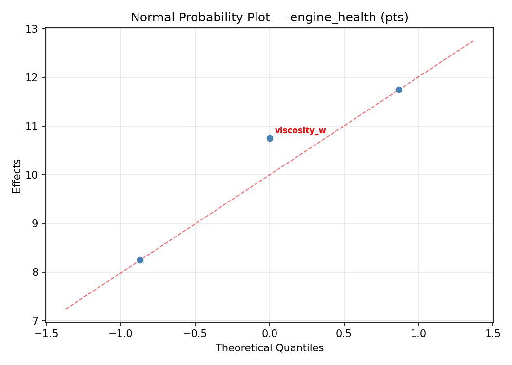
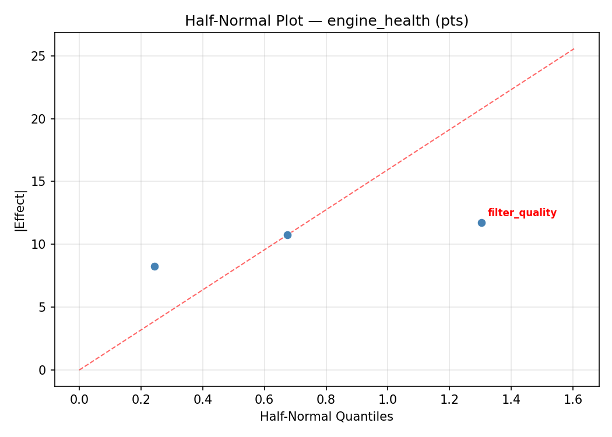
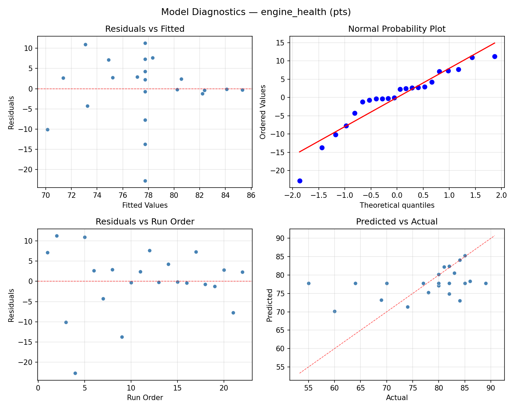
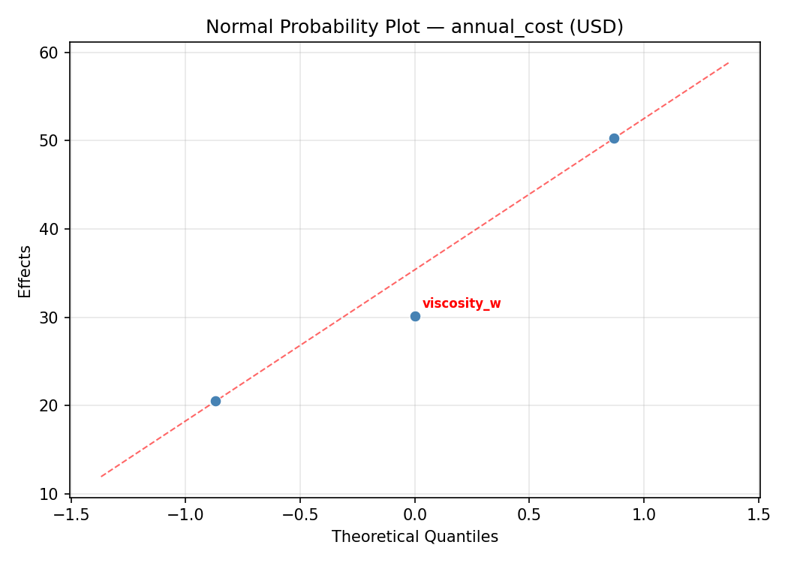
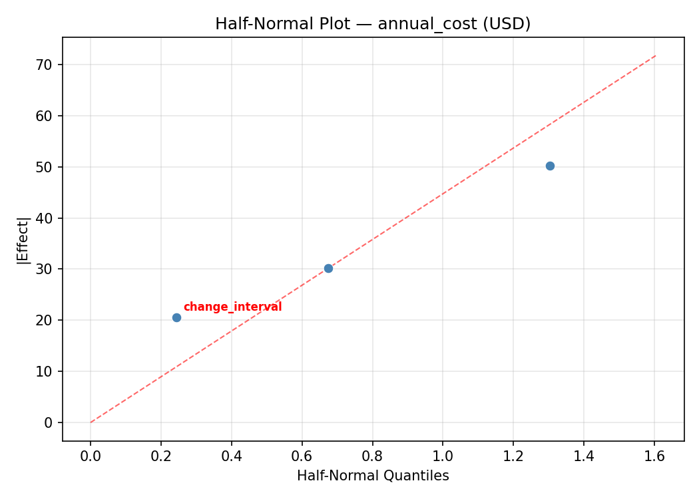
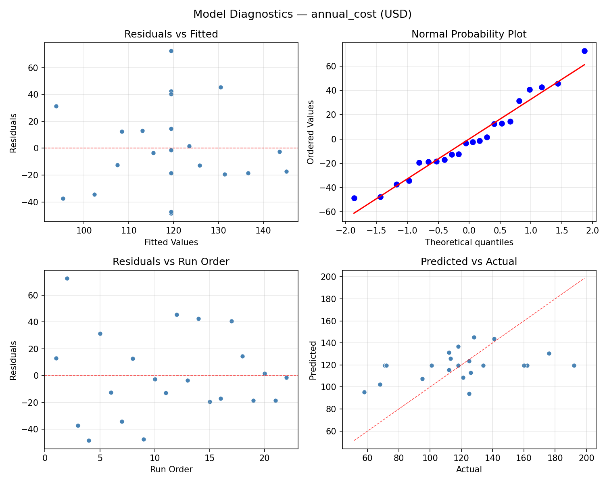

Summary
This experiment investigates engine oil change interval. Central composite design to maximize engine longevity and minimize cost by tuning oil viscosity, change interval, and filter quality.
The design varies 3 factors: viscosity w (W), ranging from 0 to 10, change interval (miles), ranging from 3000 to 10000, and filter quality (tier), ranging from 1 to 5. The goal is to optimize 2 responses: engine health (pts) (maximize) and annual cost (USD) (minimize). Fixed conditions held constant across all runs include engine type = gasoline_4cyl, driving style = mixed.
A Central Composite Design (CCD) was selected to fit a full quadratic response surface model, including curvature and interaction effects. With 3 factors this produces 22 runs including center points and axial (star) points that extend beyond the factorial range.
Quadratic response surface models were fitted to capture potential curvature and factor interactions. The RSM contour plots below visualize how pairs of factors jointly affect each response.
Key Findings
For engine health, the most influential factors were viscosity w (39.6%), filter quality (36.4%), change interval (24.0%). The best observed value was 89.0 (at viscosity w = 10, change interval = 10000, filter quality = 5).
For annual cost, the most influential factors were viscosity w (44.7%), filter quality (32.5%), change interval (22.8%). The best observed value was 58.0 (at viscosity w = 5, change interval = 6500, filter quality = 3).
Recommended Next Steps
- Run confirmation experiments at the predicted optimal settings to validate the model.
- Consider whether any fixed factors should be varied in a future study.
Experimental Setup
Factors
| Factor | Low | High | Unit |
|---|
viscosity_w | 0 | 10 | W |
change_interval | 3000 | 10000 | miles |
filter_quality | 1 | 5 | tier |
Fixed: engine_type = gasoline_4cyl, driving_style = mixed
Responses
| Response | Direction | Unit |
|---|
engine_health | ↑ maximize | pts |
annual_cost | ↓ minimize | USD |
Configuration
{
"metadata": {
"name": "Engine Oil Change Interval",
"description": "Central composite design to maximize engine longevity and minimize cost by tuning oil viscosity, change interval, and filter quality"
},
"factors": [
{
"name": "viscosity_w",
"levels": [
"0",
"10"
],
"type": "continuous",
"unit": "W"
},
{
"name": "change_interval",
"levels": [
"3000",
"10000"
],
"type": "continuous",
"unit": "miles"
},
{
"name": "filter_quality",
"levels": [
"1",
"5"
],
"type": "continuous",
"unit": "tier"
}
],
"fixed_factors": {
"engine_type": "gasoline_4cyl",
"driving_style": "mixed"
},
"responses": [
{
"name": "engine_health",
"optimize": "maximize",
"unit": "pts"
},
{
"name": "annual_cost",
"optimize": "minimize",
"unit": "USD"
}
],
"settings": {
"operation": "central_composite",
"test_script": "use_cases/118_engine_oil_change/sim.sh"
}
}
Experimental Matrix
The Central Composite Design produces 22 runs. Each row is one experiment with specific factor settings.
| Run | viscosity_w | change_interval | filter_quality |
|---|
| 1 | 5 | 6500 | 3 |
| 2 | 10 | 3000 | 5 |
| 3 | 0 | 10000 | 1 |
| 4 | 5 | 12890.1 | 3 |
| 5 | 5 | 6500 | 3 |
| 6 | -4.12871 | 6500 | 3 |
| 7 | 5 | 6500 | -0.651484 |
| 8 | 5 | 6500 | 3 |
| 9 | 10 | 10000 | 1 |
| 10 | 14.1287 | 6500 | 3 |
| 11 | 5 | 6500 | 3 |
| 12 | 5 | 109.903 | 3 |
| 13 | 5 | 6500 | 3 |
| 14 | 0 | 3000 | 5 |
| 15 | 5 | 6500 | 3 |
| 16 | 10 | 3000 | 1 |
| 17 | 5 | 6500 | 6.65148 |
| 18 | 10 | 10000 | 5 |
| 19 | 5 | 6500 | 3 |
| 20 | 0 | 3000 | 1 |
| 21 | 0 | 10000 | 5 |
| 22 | 5 | 6500 | 3 |
Step-by-Step Workflow
1
Preview the design
$ python doe.py info --config use_cases/118_engine_oil_change/config.json
2
Generate the runner script
$ python doe.py generate --config use_cases/118_engine_oil_change/config.json \
--output use_cases/118_engine_oil_change/results/run.sh --seed 42
3
Execute the experiments
$ bash use_cases/118_engine_oil_change/results/run.sh
4
Analyze results
$ python doe.py analyze --config use_cases/118_engine_oil_change/config.json
5
Get optimization recommendations
$ python doe.py optimize --config use_cases/118_engine_oil_change/config.json
6
Multi-objective optimization
With 2 competing responses, use --multi to find the best compromise via Derringer–Suich desirability.
$ python doe.py optimize --config use_cases/118_engine_oil_change/config.json --multi
7
Generate the HTML report
$ python doe.py report --config use_cases/118_engine_oil_change/config.json \
--output use_cases/118_engine_oil_change/results/report.html
Features Exercised
| Feature | Value |
|---|
| Design type | central_composite |
| Factor types | continuous (all 3) |
| Arg style | double-dash |
| Responses | 2 (engine_health ↑, annual_cost ↓) |
| Total runs | 22 |
Analysis Results
Generated from actual experiment runs using the DOE Helper Tool.
Response: engine_health
Top factors: viscosity_w (39.6%), filter_quality (36.4%), change_interval (24.0%).
ANOVA
| Source | DF | SS | MS | F | p-value |
|---|
| Source | DF | SS | MS | F | p-value |
| viscosity_w | 4 | 321.1970 | 80.2992 | 0.922 | 0.4920 |
| change_interval | 4 | 283.4470 | 70.8617 | 0.814 | 0.5472 |
| filter_quality | 4 | 163.9470 | 40.9867 | 0.471 | 0.7565 |
| Lack | of | Fit | 2 | 280.2727 | 140.1364 |
| Pure | Error | 7 | 609.5000 | | |
| Error | 9 | 889.7727 | 87.0714 | | |
| Total | 21 | 1658.3636 | 78.9697 | | |
Pareto Chart

Main Effects Plot

Normal Probability Plot of Effects

Half-Normal Plot of Effects

Model Diagnostics

Response: annual_cost
Top factors: viscosity_w (44.7%), filter_quality (32.5%), change_interval (22.8%).
ANOVA
| Source | DF | SS | MS | F | p-value |
|---|
| Source | DF | SS | MS | F | p-value |
| viscosity_w | 4 | 6891.0379 | 1722.7595 | 1.791 | 0.2147 |
| change_interval | 4 | 4215.0379 | 1053.7595 | 1.096 | 0.4149 |
| filter_quality | 4 | 3101.4545 | 775.3636 | 0.806 | 0.5512 |
| Lack | of | Fit | 2 | 3950.4242 | 1975.2121 |
| Pure | Error | 7 | 6731.5000 | | |
| Error | 9 | 10681.9242 | 961.6429 | | |
| Total | 21 | 24889.4545 | 1185.2121 | | |
Pareto Chart

Main Effects Plot

Normal Probability Plot of Effects

Half-Normal Plot of Effects

Model Diagnostics

Response Surface Plots
3D surfaces fitted with quadratic RSM. Red dots are observed data points.
annual cost change interval vs filter quality

annual cost viscosity w vs change interval

annual cost viscosity w vs filter quality

engine health change interval vs filter quality

engine health viscosity w vs change interval

engine health viscosity w vs filter quality

Multi-Objective Optimization
When responses compete, Derringer–Suich desirability finds the best compromise.
Each response is scaled to a 0–1 desirability, then combined via a weighted geometric mean.
Overall Desirability
D = 0.7345
Per-Response Desirability
| Response | Weight | Desirability | Predicted | Dir |
|---|
engine_health |
2.0 |
|
84.00 0.8209 84.00 pts |
↑ |
annual_cost |
1.0 |
|
112.00 0.5882 112.00 USD |
↓ |
Recommended Settings
| Factor | Value |
|---|
viscosity_w | 5 W |
change_interval | 6500 miles |
filter_quality | 3 tier |
Source: from observed run #15
Trade-off Summary
Sacrifice = how much worse than single-objective best.
| Response | Predicted | Best Observed | Sacrifice |
|---|
annual_cost | 112.00 | 58.00 | +54.00 |
Top 3 Runs by Desirability
| Run | D | Factor Settings |
|---|
| #11 | 0.7157 | viscosity_w=10, change_interval=3000, filter_quality=1 |
| #5 | 0.6958 | viscosity_w=-4.12871, change_interval=6500, filter_quality=3 |
Model Quality
| Response | R² | Type |
|---|
annual_cost | 0.1022 | linear |
Full Multi-Objective Output
============================================================
MULTI-OBJECTIVE OPTIMIZATION
Method: Derringer-Suich Desirability Function
============================================================
Overall desirability: D = 0.7345
Response Weight Desirability Predicted Direction
---------------------------------------------------------------------
engine_health 2.0 0.8209 84.00 pts ↑
annual_cost 1.0 0.5882 112.00 USD ↓
Recommended settings:
viscosity_w = 5 W
change_interval = 6500 miles
filter_quality = 3 tier
(from observed run #15)
Trade-off summary:
engine_health: 84.00 (best observed: 89.00, sacrifice: +5.00)
annual_cost: 112.00 (best observed: 58.00, sacrifice: +54.00)
Model quality:
engine_health: R² = 0.0627 (linear)
annual_cost: R² = 0.1022 (linear)
Top 3 observed runs by overall desirability:
1. Run #15 (D=0.7345): viscosity_w=5, change_interval=6500, filter_quality=3
2. Run #11 (D=0.7157): viscosity_w=10, change_interval=3000, filter_quality=1
3. Run #5 (D=0.6958): viscosity_w=-4.12871, change_interval=6500, filter_quality=3
Full Analysis Output
=== Main Effects: engine_health ===
Factor Effect Std Error % Contribution
--------------------------------------------------------------
viscosity_w 14.1667 1.8946 39.6%
filter_quality 13.0000 1.8946 36.4%
change_interval 8.5833 1.8946 24.0%
=== ANOVA Table: engine_health ===
Source DF SS MS F p-value
-----------------------------------------------------------------------------
viscosity_w 4 321.1970 80.2992 0.922 0.4920
change_interval 4 283.4470 70.8617 0.814 0.5472
filter_quality 4 163.9470 40.9867 0.471 0.7565
Lack of Fit 2 280.2727 140.1364 1.609 0.2660
Pure Error 7 609.5000 87.0714
Error 9 889.7727 87.0714
Total 21 1658.3636 78.9697
=== Summary Statistics: engine_health ===
viscosity_w:
Level N Mean Std Min Max
------------------------------------------------------------
-4.12871 1 89.0000 0.0000 89.0000 89.0000
0 4 78.2500 12.2848 60.0000 86.0000
10 4 81.7500 3.3040 78.0000 85.0000
14.1287 1 83.0000 0.0000 83.0000 83.0000
5 12 74.8333 8.7991 55.0000 84.0000
change_interval:
Level N Mean Std Min Max
------------------------------------------------------------
10000 4 84.0000 2.7080 80.0000 86.0000
109.903 1 81.0000 0.0000 81.0000 81.0000
12890.1 1 84.0000 0.0000 84.0000 84.0000
3000 4 76.0000 10.9545 60.0000 84.0000
6500 12 75.4167 9.5008 55.0000 89.0000
filter_quality:
Level N Mean Std Min Max
------------------------------------------------------------
-0.651484 1 82.0000 0.0000 82.0000 82.0000
1 4 78.7500 12.5266 60.0000 86.0000
3 12 76.5833 9.5199 55.0000 89.0000
5 4 81.2500 2.9861 78.0000 85.0000
6.65148 1 69.0000 0.0000 69.0000 69.0000
=== Main Effects: annual_cost ===
Factor Effect Std Error % Contribution
--------------------------------------------------------------
viscosity_w 82.5833 7.3398 44.7%
filter_quality 60.0000 7.3398 32.5%
change_interval 42.0000 7.3398 22.8%
=== ANOVA Table: annual_cost ===
Source DF SS MS F p-value
-----------------------------------------------------------------------------
viscosity_w 4 6891.0379 1722.7595 1.791 0.2147
change_interval 4 4215.0379 1053.7595 1.096 0.4149
filter_quality 4 3101.4545 775.3636 0.806 0.5512
Lack of Fit 2 3950.4242 1975.2121 2.054 0.1987
Pure Error 7 6731.5000 961.6429
Error 9 10681.9242 961.6429
Total 21 24889.4545 1185.2121
=== Summary Statistics: annual_cost ===
viscosity_w:
Level N Mean Std Min Max
------------------------------------------------------------
-4.12871 1 192.0000 0.0000 192.0000 192.0000
0 4 125.2500 49.4865 58.0000 176.0000
10 4 127.2500 22.6771 112.0000 160.0000
14.1287 1 113.0000 0.0000 113.0000 113.0000
5 12 109.4167 28.7764 68.0000 162.0000
change_interval:
Level N Mean Std Min Max
------------------------------------------------------------
10000 4 147.2500 27.5121 112.0000 176.0000
109.903 1 118.0000 0.0000 118.0000 118.0000
12890.1 1 125.0000 0.0000 125.0000 125.0000
3000 4 105.2500 32.1390 58.0000 126.0000
6500 12 114.5833 37.3009 68.0000 192.0000
filter_quality:
Level N Mean Std Min Max
------------------------------------------------------------
-0.651484 1 128.0000 0.0000 128.0000 128.0000
1 4 126.5000 53.1507 58.0000 176.0000
3 12 118.5000 34.2332 71.0000 192.0000
5 4 126.0000 11.8603 112.0000 141.0000
6.65148 1 68.0000 0.0000 68.0000 68.0000
Optimization Recommendations
=== Optimization: engine_health ===
Direction: maximize
Best observed run: #2
viscosity_w = 10
change_interval = 10000
filter_quality = 5
Value: 89.0
RSM Model (linear, R² = 0.0482, Adj R² = -0.1105):
Coefficients:
intercept +77.7273
viscosity_w +0.3797
change_interval -1.7965
filter_quality -1.4401
RSM Model (quadratic, R² = 0.2398, Adj R² = -0.3304):
Coefficients:
intercept +77.4115
viscosity_w +0.3797
change_interval -1.7965
filter_quality -1.4401
viscosity_w*change_interval +1.7500
viscosity_w*filter_quality +0.2500
change_interval*filter_quality +4.2500
viscosity_w^2 -0.1421
change_interval^2 +2.1079
filter_quality^2 -1.4921
Curvature analysis:
change_interval coef=+2.1079 convex (has a minimum)
filter_quality coef=-1.4921 concave (has a maximum)
viscosity_w coef=-0.1421 concave (has a maximum)
Notable interactions:
change_interval*filter_quality coef=+4.2500 (synergistic)
viscosity_w*change_interval coef=+1.7500 (synergistic)
Predicted optimum (from linear model, at observed points):
viscosity_w = 10
change_interval = 3000
filter_quality = 1
Predicted value: 81.3435
Surface optimum (via L-BFGS-B, linear model):
viscosity_w = 10
change_interval = 3000
filter_quality = 1
Predicted value: 81.3435
Model quality: Weak fit — consider adding center points or using a different design.
Factor importance:
1. filter_quality (effect: 29.5, contribution: 55.3%)
2. viscosity_w (effect: 14.5, contribution: 27.2%)
3. change_interval (effect: 9.3, contribution: 17.5%)
=== Optimization: annual_cost ===
Direction: minimize
Best observed run: #3
viscosity_w = 5
change_interval = 6500
filter_quality = 3
Value: 58.0
RSM Model (linear, R² = 0.0491, Adj R² = -0.1094):
Coefficients:
intercept +119.4545
viscosity_w +1.6318
change_interval -7.7195
filter_quality +4.5899
RSM Model (quadratic, R² = 0.2984, Adj R² = -0.2279):
Coefficients:
intercept +116.6650
viscosity_w +1.6318
change_interval -7.7195
filter_quality +4.5899
viscosity_w*change_interval +8.2500
viscosity_w*filter_quality +15.0000
change_interval*filter_quality +17.7500
viscosity_w^2 -0.9552
change_interval^2 +7.4447
filter_quality^2 -2.3052
Curvature analysis:
change_interval coef=+7.4447 convex (has a minimum)
filter_quality coef=-2.3052 concave (has a maximum)
viscosity_w coef=-0.9552 concave (has a maximum)
Notable interactions:
change_interval*filter_quality coef=+17.7500 (synergistic)
viscosity_w*filter_quality coef=+15.0000 (synergistic)
viscosity_w*change_interval coef=+8.2500 (synergistic)
Predicted optimum (from linear model, at observed points):
viscosity_w = 5
change_interval = 109.903
filter_quality = 3
Predicted value: 133.5484
Surface optimum (via L-BFGS-B, linear model):
viscosity_w = 0
change_interval = 10000
filter_quality = 1
Predicted value: 105.5133
Model quality: Weak fit — consider adding center points or using a different design.
Factor importance:
1. viscosity_w (effect: 83.0, contribution: 40.0%)
2. filter_quality (effect: 82.0, contribution: 39.5%)
3. change_interval (effect: 42.5, contribution: 20.5%)